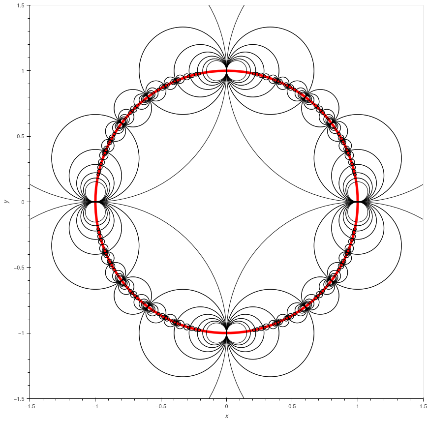
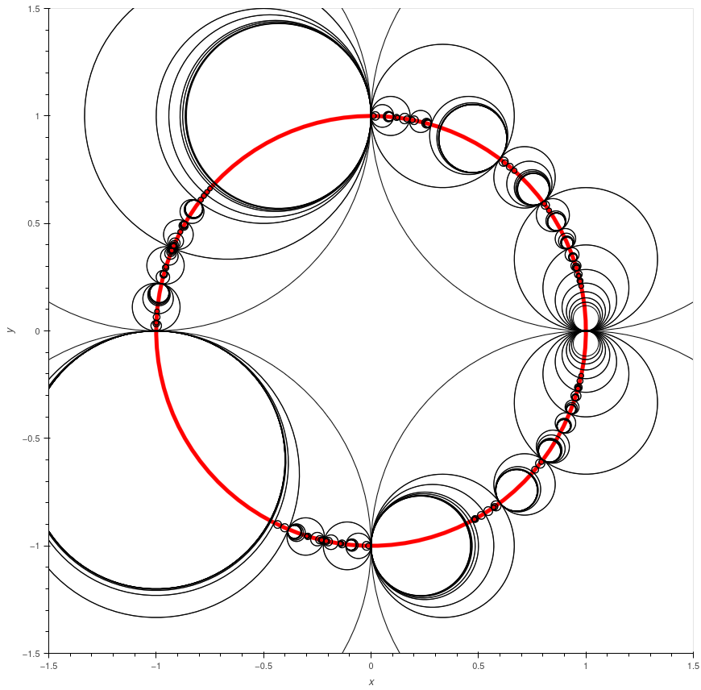
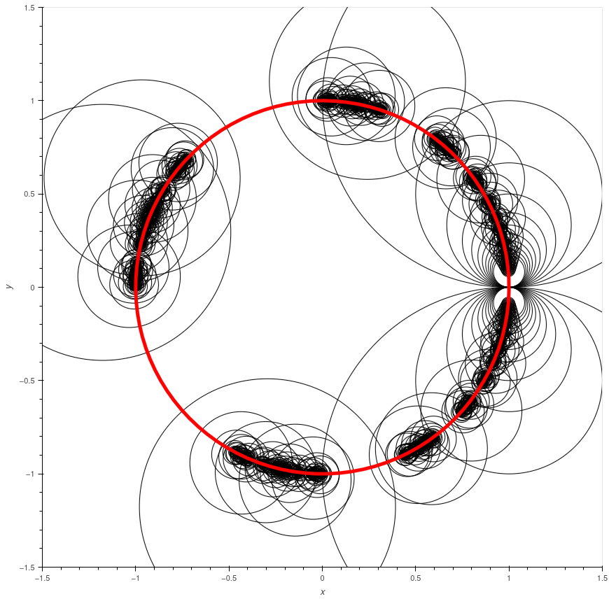

Modifications of the \( (\infty,\infty,\infty) \)-triangle group:
The images of the triangle when \( \lambda = 1 \) (complete)
The images of the triangle when \( \lambda = 2 \) (incomplete)
The isometric circles when \( \lambda = 2 \) (incomplete)